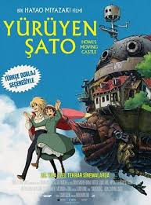
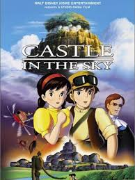
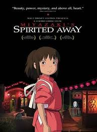
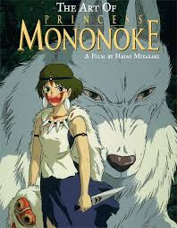
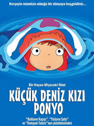
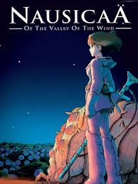
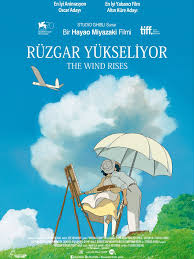
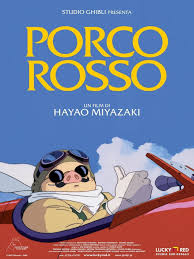
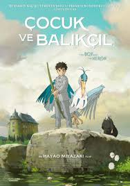

Miyazaki Animeleri

Genç bir kızın, büyücü Howl’un yürüyen şatosunda yaşadığı büyülü macera.

Doğanın ruhlarıyla tanışan iki kız kardeşin iç ısıtan hikayesi.

Gökyüzündeki kayıp kaleyi arayan iki gencin macera dolu yolculuğu.

Chihiro’nun gizemli ruhlar dünyasında hayatta kalma mücadelesi.

Doğayla insanların mücadelesinde iki taraf arasında kalan Ashitaka'nın hikayesi.

İnsan olmayı isteyen sevimli balık Ponyo’nun büyülü hikayesi.

Nausicaä, doğayı korumak için savaşan cesur bir prensesin hikayesi.

Uçak tasarımcısı Jiro’nun hayalleri ve hayat mücadelesi.

Genç cadı Kiki, yeni bir şehirde kendi ayakları üzerinde durmayı öğrenir.

Domuz yüzüne lanetlenmiş pilot Porco Rosso’nun hava korsanlarıyla mücadelesi.

Aşırıcılar, Borrower adı verilen, sadece 10 cm boyunda olan ve normal boyutlardaki sıradan insan evlerinin yer döşemelerinin altında yaşayan bir grup ufak insan etrafında gelişiyor.

Çocuk ve Balıkçıl, ergenlik döneminde olan bir gencin hikayesini konu ediyor. İkinci Dünya Savaşı sırasıda geçen filmde, küçük bir çocuk olan Mahito, annesini kaybetmesinin ardından taşrada yaşayan babasının yanına taşınmak zorunda kalır.